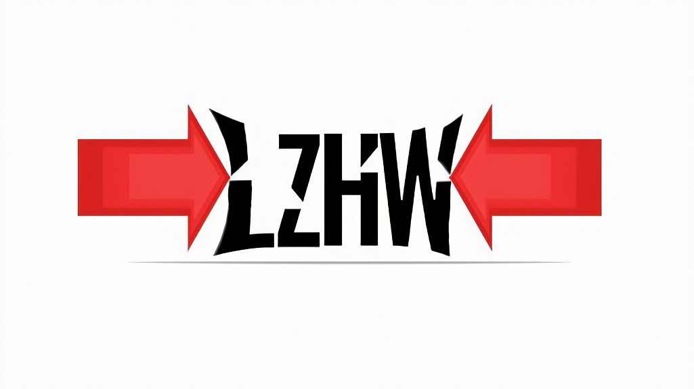

lzhw (DataFrame Compression)
Compression library for data frames and tabular data files, csv, excel etc.


Compression library to compress big lists and/or pandas dataframes using an optimized algorithm (lzhw) developed from Lempel-Ziv, Huffman and LZ-Welch techniques.
lzhw has a command line tool that can be downloaded from here and can work from command line with no prior python installation.
Manual on how to use it available here.
It works on Windows and soon a Mac version will be available.
How lzhw Works
Overview
The library's main goal is to compress data frames, excel and csv files so that they consume less space to overcome memory errors. Also to enable dealing with large files that can cause memory errors when reading them in python or that cause slow operations. With lzhw, we can read compressed files and do operations column by column only on columns that we are interesred in.
The algorithm is a mix of the famous lempel-ziv and huffman coding algorithm with some use of lempel-ziv-welch algorithm. The algorithm starts with an input stream for example this one:
example = ["to", "be", "or", "not", "to", "be", "or", "to", "be", "or", "not"] * 2
print("".join(example))
# tobeornottobeortobeornottobeornottobeortobeornot
Lempel-Ziv77 with Huffman Coding
lzhw uses lempel-ziv77 to discover repeated sequences in the stream and construct triplets, in that format <offset,length,literal>. Where offset is how many steps should we return back word to find the beginning of the current sequence and length is how many steps should we move and literal is the next value after the sequence.
Then we will have 3 shorter lists representing the stream, where Huffman Coding can come to the game encoding them.
The function that performs lempel-ziv and returning the triplets called lz77_compress.
import lzhw
lz77_ex = lzhw.lz77_compress(example)
print(lz77_ex)
# [(None, None, 'to'), (None, None, 'be'), (None, None, 'or'),
# (None, None, 'not'), (4, 3, 'to'), (7, 6, 'not'), (11, 6, 'not')]
Here all the Nones values are originally "0s" but converted to None to save more space.
Now huffman coding will take the offsets list, lengths list and literal list and encode them based on most occurring values to give:
lz77_lists = list(zip(*lz77_ex))
print(lz77_lists)
# [(None, None, None, None, 4, 7, 11),
# (None, None, None, None, 3, 6, 6),
# ('to', 'be', 'or', 'not', 'to', 'not', 'not')]
huffs = []
from collections import Counter
for i in range(len(lz77_lists)):
huff = lzhw.huffman_coding(Counter(lz77_lists[i]))
huffs.append(huff)
print(huffs)
# [{None: '1', 4: '010', 7: '011', 11: '00'}, {None: '1', 3: '00', 6: '01'},
# {'to': '11', 'be': '100', 'or': '101', 'not': '0'}]
Now if we encode each value in the triplets with its corresponding value from the huffman dictionary and append everything together we will have:
bits = []
for i in range(len(huffs)):
bit = "".join([huffs[i].get(k) for k in lz77_lists[i]])
bits.append(bit)
print(bits)
# ['111101001100', '1111000101', '1110010101100']
print(len("".join(bits)))
# 35
Which has a length of 35 bits only!
Then Lempel-Ziv-Welch, lzw_compress(), is used to further compress the dictionaries produces by Huffman.
Better than Huffman Alone
Using each algorithm alone can give us bigger number of bits, for example, using only huffman coding will give us:
huff_alone = lzhw.huffman_coding(Counter(example))
print(huff_alone)
# {'to': '11', 'be': '01', 'or': '10', 'not': '00'}
huff_bit = "".join([huff_alone.get(k) for k in example])
print(huff_bit)
# 11011000110110110110001101100011011011011000
print(len(huff_bit))
# 44
44 bits, 9 more bit!!! Big deal when dealing with bigger data.
DEFLATE Note
The techniques may seem similar to the DEFLATE algorithm which uses both LZSS, which is a variant of LZ77, and huffman coding, but I am not sure how the huffman coding further compresses the triplets. I believe it compresses the triplets altogether not as 3 separate lists as lzhw. And also it doesn't use the lempel-ziv-welch for further compression.
DEFLATE Algorithm may be more complicated than lzhw, discussed here, but the latter is designed specifically for tabular data types to help in data science and data analysis projects.
Putting all together with LZHW Class
All of the steps can be done at once using LZHW class as follows and as shown in the Quick Start section:
lzhw_comp = lzhw.LZHW(example)
print(lzhw_comp.compressed)
# (8012, 1989, 15532) # this is how the compressed data looks like and stored
print(lzhw_comp.sequences)
# {'offset': {3: None, 10: 4, 11: 7, 4: 11},
# 'length': {3: None, 4: 3, 5: 6},
# 'literal_str': {7: 321647, 12: 312421, 13: 319090, 2: 163110516}}